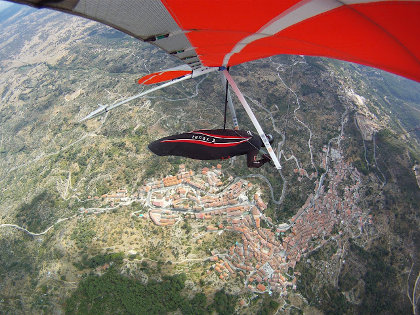

Presentación Apresentação
Hola a todo el mundo desde Pedro Bernardo, un fantástico lugar para la práctica del vuelo libre situado en el Sistema Central de la Península Ibérica, en la cara sur de La Sierra de Gredos la cual se eleva sobre un precioso valle bañado por el río Tietar.
Os invitamos a venir a participar en el I Open de Ala Delta de Pedro Bernardo que se celebrará los días 28, 29, 30 de Abril y 1 de Mayo.
Esperamos veros en estas fechas por Pedro Bernardo y compartir con todos vosotros las magníficas condiciones para el vuelo libre que se dan en este lugar, con buenas y bonitas pruebas que nos hagan disfrutar de grandes vuelos.
Contamos con la participación de todos los pilotos que deseen disfrutar en este Open de Ala Delta y para ello tenemos únicamente dos categorías:
-
Open: clasificación abierta a todas los participantes; calvas, rígidas (con su correspondiente penalización) y sport.
-
Sport: clasificación para alas delta sport (con mástil y, en teoría, pilotos menos expertos)
Para poder organizar todo el evento en condiciones hemos puesto una cuota de inscripción de 30€ (ver Notas y Reglamento).
Un abrazo a todos, nos vemos volando.